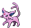

-
bulbasaur #001

- Grama
- Veneno
Há uma semente de planta em suas costas desde o dia em que este Pokémon nasceu. A semente cresce lentamente.
-
Ivysaur #002

- Grama
- Veneno
Quando o bulbo em suas costas cresce, parece perder a capacidade de ficar de pé em suas patas traseiras.
-
venusaur #003

- Grama
- Veneno
Sua planta floresce quando está absorvendo energia solar. Ele permanece em movimento para busca da luz solar.
-
Charmander #004

- Fogo
Tem preferência por coisas quentes. Quando chove, diz-se que o vapor jorra da ponta de sua cauda.
-
Charmeleon #005

- Fogo
Tem natureza bárbara. Na batalha, ele chicoteia sua cauda ardente e corta com garras afiadas.
-
Charizard #006

- Fogo
Ele cospe fogo que é quente o suficiente para derreter pedregulhos. Pode causar incêndios florestais soprando chamas.
-
Squirtle #007

- Água
Quando ele retrai seu longo pescoço em sua concha, ele esguicha água com força vigorosa.
-
Wartortle #008

- Água
É reconhecido como um símbolo de longevidade. Se sua concha tem algas, esse Wartortle é muito antigo.
-
Blastoise #009

- Água
Ele esmaga o seu inimigo sob seu corpo pesado para causar desmaios. Em uma pitada, ele se retirará de dentro de sua concha.
-
Caterpie #010

- Inseto
Para proteção, ele libera um fedor horrivel da antena em sua cabeça para afastar os inimigos.
-
Metapod #011

- Inseto
Está esperando o momento de evoluir. Nesta fase, só pode endurecer, por isso permanece imóvel para evitar o ataque.
-
Butterfree #012

- Inseto
- Voador
Em batalha, ele bate as asas em grande velocidade para liberar poeira altamente tóxica no ar.
-
Gastly #092

- Fantasma
- Veneno
Ele envolve seu oponente em seu corpo gasoso, enfraquecendo lentamente sua presa ao envenená-la através da pele.
-
Haunter #093

- Fantasma
- Veneno
Ele gosta de se esconder no escuro e bater nos ombros com uma mão gasosa. Seu toque causa estremecimento sem fim.
-
Gengar #094

- Fantasma
- Veneno
Para roubar a vida de seu alvo, ele se esconde na sombra da presa e silenciosamente espera por uma oportunidade.
-
Eevee #133

- Normal
Sua capacidade de evoluir em muitas formas permite que ela se adapte suave e perfeitamente a qualquer ambiente.
-
Vaporeon #134

- Água
Vive perto da água. Sua longa cauda é marcada por uma barbatana, que muitas vezes é confundida com a de uma sereia.
-
Jolteon #135

- Elétrico
Ele concentra as fracas cargas elétricas emitidas por suas células e lança raios perversos.
-
Flareon #136

- Fogo
O ar inalado é levado ao seu saco de chamas, aquecido e exalado como fogo que atinge mais de 3.000 graus Fahrenheit.
-
Espeon #196
- Psíquico
A ponta de sua cauda bifurcada treme quando está prevendo o próximo movimento de seu oponente.
-
Umbreon #197

- Escuridão
Quando exposto à aura da lua, os anéis em seu corpo brilham levemente e ele ganha um poder misterioso.
-
Leafeon #470

- Grama
Quando você vir Leafeon dormindo em um pedaço de sol, saberá que ele está usando a fotossíntese para produzir ar limpo.